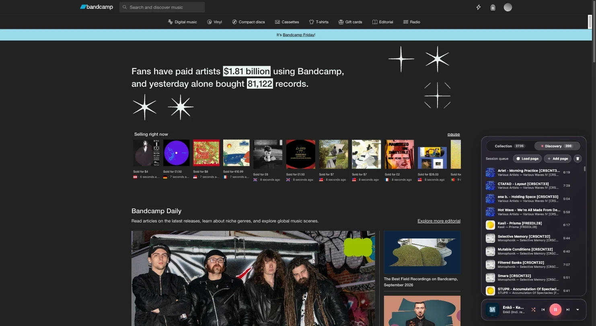
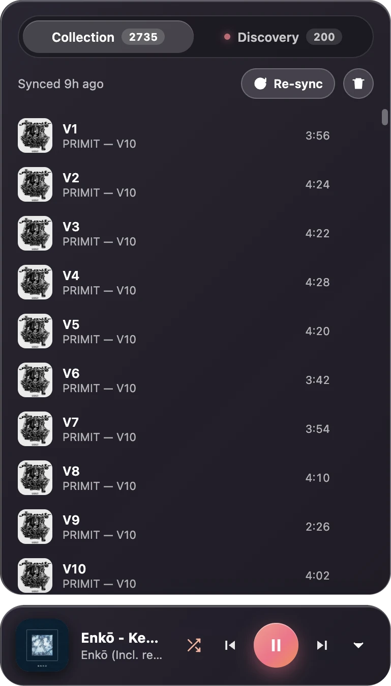
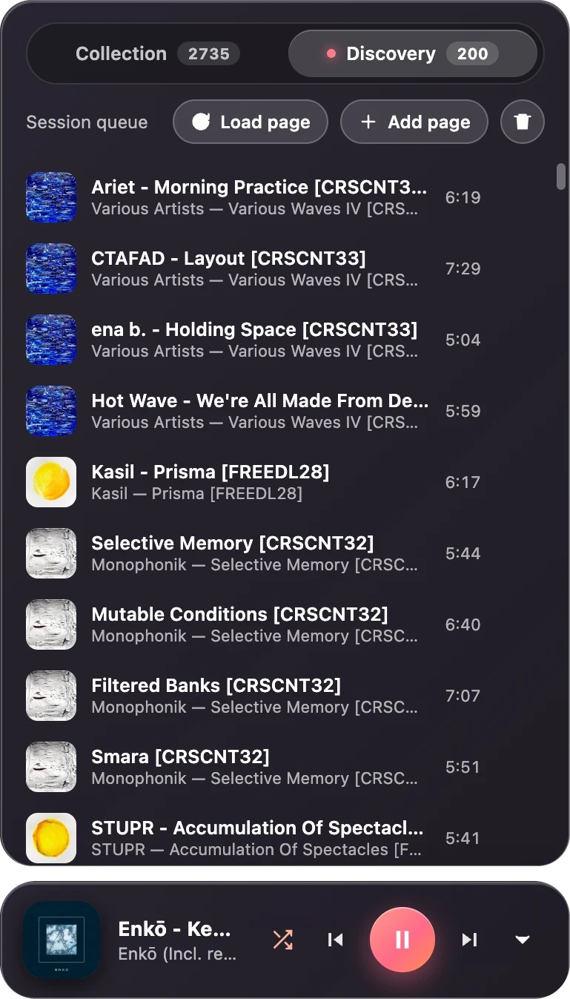
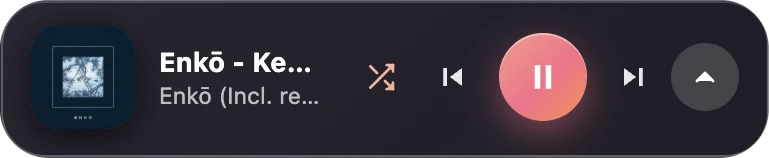

01 · Brief
Bandcamp is where my music lives, but listening there never worked the way I like. So I wanted to see if I could build it as a Chrome extension. It makes new music easy to discover, and plays my own library at work without downloading all of it.
02 · Gallery
Gallery.



